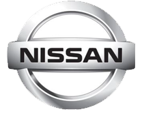
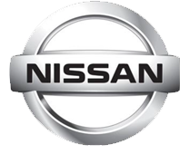
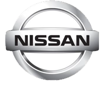
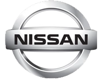

Concesionario de Carros
 




The Ford Motor Company, mas conocida simplemente como Ford, es una empresa multinacional estadounidense fabricante de automoviles, Camiones y Microbuses con base en Dearborn (Michigan, Estados Unidos). Fue fundada en el 16 de junio de 1903 por Henry Ford en Detroit (Michigan). Segun la revista Fortune, DaimlerChrysler y Toyota Motor superaron a Ford, situandose respectivamente como el segundo y tercer grupo de fabricantes de automoviles mundial con mas ingresos en 2004. Durante muchos años, Ford ha sido el numero uno global por delante de General Motors. Ford continua siendo una de las 500 mas grandes corporaciones por ingresos.
Toyota Motor Corporation ,simplemente llamado Toyota, es un fabricante de automoviles japones con sede en Toyota (Aichi), Japon. Toyota fue el mayor fabricante de automoviles en 2012 (por produccion) por delante del Grupo Volkswagen y General Motors,2 y tuvo ventas mundiales aproximadas de 9,98 millones de vehículos en 2013.


Chevrolet es una marca de automoviles y camiones con sede en Estados Unidos perteneciente al grupo General Motors. Nacio de la alianza de Louis Chevrolet y William Crapo Durant el 3 de noviembre de 1911,1 en los Estados Unidos, fabricando en primer lugar automóviles robustos y mas tarde modelos de bajo costo.Actualmente, Chevrolet incremento su participación en el mercado mundial a partir de la implementacion del nuevo concepto de diceño global llamado GPix o Global Pix, con el cual comenzó a presentar sus primeros vehículos denominados "globales", los cuales comenzaron a ser vendidos en Asia, Europa y America junto a los Estados Unidos.